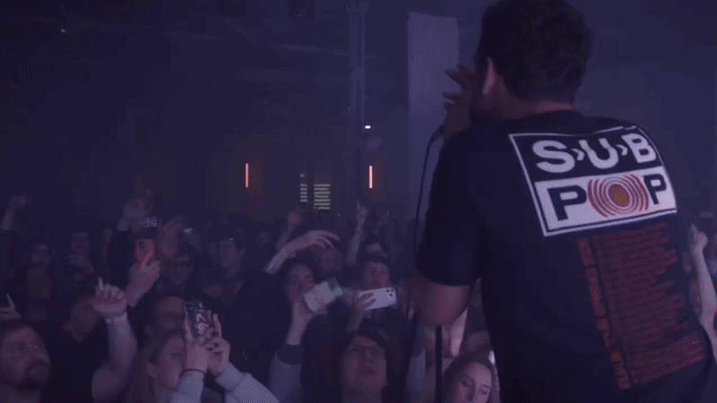
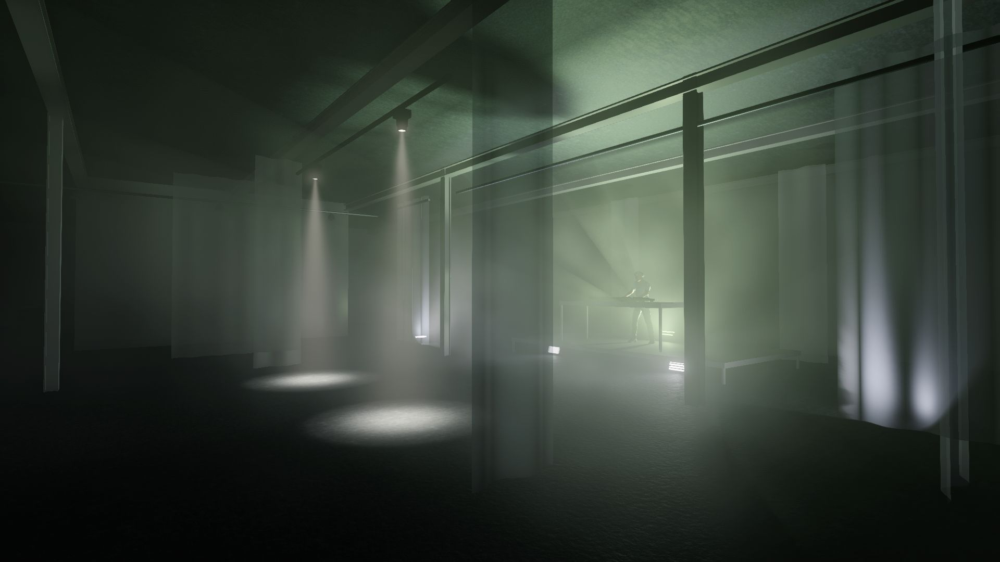
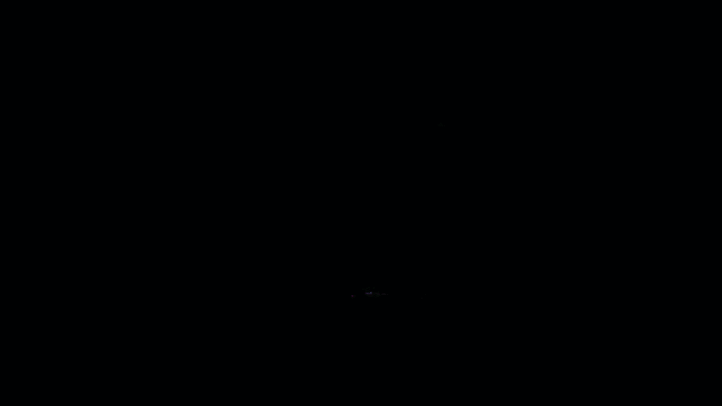
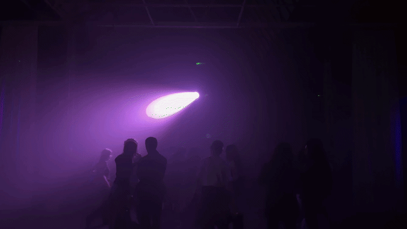

Designed and operated lighting on GrandMA3 for KONTEXT & GS's Berlin Fashion Week Special at Haus der Visionäre, Berlin — featuring performances by Yung Gud (Rooster), Kamixlo, Iced Lattina, and Valeria Litvakov, alongside a moving-image programme opening with works by Mark Leckey and curated by Yan Yassin.